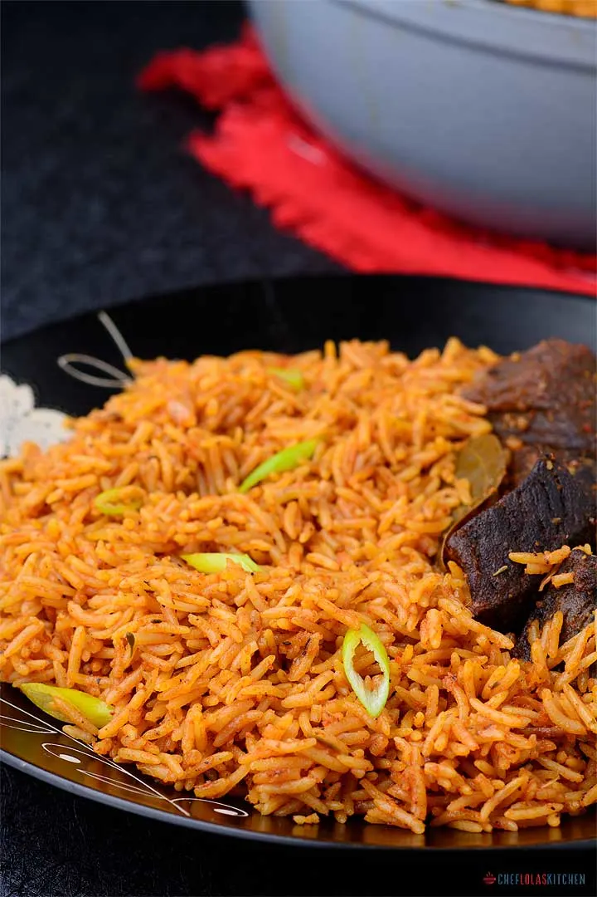

This is an incredibly easy but delicious recipe. The uniqueness of this jollof rice lies in the roasting of bell peppers, tomatoes, onions, and garlic. This brings an additional depth of flavor to the meal. If you’re looking for a Jollof Rice recipe that will be the star of the show, this is it!
Jollof rice is a popular West African dish that is typically made with long-grain rice, tomatoes, onions, and a blend of spices. It’s a staple in many West African households like Nigeria, Ghana, and Cameroon. It is often served at events and gatherings.
In recent years, the recipe has evolved, and many people have started using basmati rice instead of long-grain rice. This twist on the classic dish has become known as basmati jollof rice, and it’s delicious!
Basmati rice is a type of long-grain rice that is commonly used in Indian and Middle Eastern cuisine. It has a distinctive aroma and flavor; when cooked, it becomes fluffy and separate. It’s perfect for making jollof rice as it holds its shape well and doesn’t get mushy.
It is a great dish to serve for a dinner party or potluck and it’s sure to impress your guests. Plus, it’s a great way to introduce your non-West African friends to the flavors of West African cuisine.
This is a great basic rice recipe that is easy to prepare. The only difference between my preparation of this rice and my classic Nigerian jollof rice recipe is that I roasted the peppers, tomatoes, onions, and garlic before using them to cook the rice. This makes a TREMENDOUS difference to the final presentation.
Well, I also used basmati rice and beef stock to give it a rich beefy taste. You can check out my collection of Rice Recipes for more delicious.
To get the best out of your jollof rice, it’s advisable to get a good brand of basmati rice. It makes a huge difference in the final texture. I personally prefer to use the sella parboiled Extra Long Basmati Rice. It works so well.
Jollof Rice can be paired with Moin moin, fried plantains, or salad. If you decide not to cook with beef, you can serve it with peri-peri chicken, fried chicken, Pan-seared Tilapia Fish, or this easy baked chicken drumsticks.
Once you’ve made your delicious Basmati Jollof Rice, what’s the best way to store it? The best way to store leftover Basmati Jollof Rice is in an airtight container in the refrigerator. It will keep for up to 5 days in this state, but we recommend eating it within 3 days for optimal flavor and texture. If you plan on keeping it longer than 5 days, freeze it! You can also reheat your leftovers by putting them back into a saucepan or microwave (if they were originally cooked in one).
Absolutely! Store any leftovers in an airtight container in the fridge for 3-5 days or the freezer for up to 3 months. Reheat in the microwave or on the stovetop.
I’ve got a ton of other delicious rice recipes on this site, feel free to check some of my picks
I have another variation of jollof rice recipe. It’s the baked version! You can click here for my mouth-watering Oven-baked jollof rice recipe.
Oven Baked Jollof Rice – Here is another take on Jollof Rice, one of the most famous West African one pot meal. Simplicity, is what sets apart the stove top from the oven baked method of cooking Jollof rice.
Delicious Oven Baked Jollof Rice to please everyone!
Hardly will you go to any Nigerian party and not find this delicious meal. Talking about party foods, you need to try this East African beef and potato pilau. This is also one delicious meal that can never be missing in most East Africans parties. It’s smells heavenly but tastes even better – I’m sorry for the deviation but I think it’s worth mentioning.
The stovetop method of cooking Jollof Rice can sometimes be a little intimidating even to the best of cooks but this oven-baked method makes it easier to deal with, and the best part is, you will have nothing burnt.
The oven method of cooking Jollof rice makes the cooking process a little easier without compromising on the complex flavor of the rice.
Though, I know some enthusiasts may not want to stray from the classics but then, you never know maybe if you make it once, it might become regular on your table just like it happened to me. You can also check other rice recipes here.
The preparation of Jollof varies from family to family. However, traditionally, Jollof contains the following